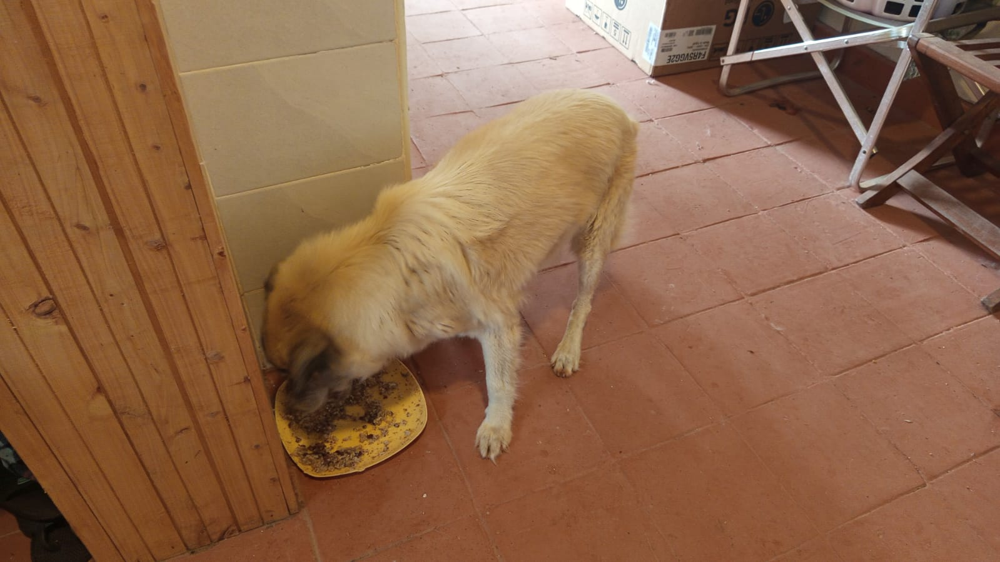

Mucheru World of Golf
Field operations at Mucheru World of Golf on Monday, 12th October 2026 focused on extensive agronomic surround finishing across nine putting greens, drainage trench base preparation, piping logistics, and continuous reservoir replenishment under site supervision of Mr. Gichuhi and Ken:
Mucheru World of Golf Operations Summary
Surplus red loam soil was spread and leveled around the collars, aprons, and banks of Greens 1, 6, 10, 13, 14, 15, 16, 17, and 18; Peter Githinji's crew graded and leveled the floors of primary drainage trenches to ensure correct fall before pipe laying; the farm tractor hauled large orange PVC drainage pipes from the greenhouse to the golf course; and incoming water replenishment into Dam 1 and Dam 3 continued steadily.
- Surplus Red Soil Surrounds Leveling (9 Greens): Field teams worked across Greens 1, 6, 10, 13, 14, 15, 16, 17, and 18, spreading and precision-leveling stockpiled red topsoil around green collars, aprons, and outer banks. This work establishes smooth, continuous transitions between the putting surfaces and surrounding fairways.
- Drainage Trench Base Leveling (Githinji's Crew): Peter Githinji's trenching crew manually leveled and smoothed the bottom of deep drainage trenches with shovels, ensuring uniform depth, correct slope, and clean beds in preparation for laying orange PVC drainage pipes for effective stormwater discharge.
- PVC Pipe Haulage by Farm Tractor: The farm tractor and trailer were deployed to transport multiple loads of large-diameter orange PVC drainage pipes from the storage depot at the greenhouse directly to staging points across the golf course.
- Continuous Water Inflow into Dam 1 & Dam 3: Water harvesting and gravity inlet feed into Dam 1 and Dam 3 progressed throughout the day, with water entering through dedicated inlet supply lines and accumulating in the lined reservoirs.
- Pop-Up Sprinkler Layout Alignment: Field stakes previously positioned at measured sprinkler points guided surround grading, ensuring that pop-up sprinkler positions remain protected and aligned with irrigation engineering plans.
18-hole putting green status audit showing the latest work completed and current condition for each green as of October 12, 2026:
| Green | Current Technical & Agronomic State | Milestone Status |
|---|---|---|
| Green 1 Today | Surplus red soil spread around collar and outer surrounds and leveled (Oct 12). | Surplus Red Soil Leveled |
| Green 2 | Riversand spread and leveled over pumice bed; surplus red soil leveled along surrounds; pop-up sprinklers measured and marked (Oct 11). | Riversand Leveled |
| Green 3 | Riversand spread and leveled over pumice bed; surplus red soil leveled along apron and bank; pop-up sprinklers measured and marked (Oct 11). | Riversand Leveled |
| Green 4 | Riversand spread and leveled over pumice bed; surplus red soil leveled along surrounds; pop-up sprinklers measured and marked (Oct 11). | Riversand Leveled |
| Green 5 | Connected PVC pipes to green outlet drainage trench for excess runoff and sprinkler lines (Oct 9). | Drainage PVC Connected |
| Green 6 Today | Surplus red soil spread around outer surrounds and leveled (Oct 12). | Surplus Red Soil Leveled |
| Green 7 | Riversand applied over pumice bed and precisely leveled across entire green surface (Oct 10); pop-up sprinklers measured and marked (Oct 11). | Riversand Leveled |
| Green 8 | Riversand spread and leveled over pumice bed; surplus red soil leveled along surrounds; pop-up sprinklers measured and marked (Oct 11). | Riversand Leveled |
| Green 9 | Riversand spread and leveled over pumice bed; surplus red soil leveled along surrounds; pop-up sprinklers measured and marked (Oct 11). | Riversand Leveled |
| Green 10 Today | Surplus red soil spread around collar and outer surrounds and leveled (Oct 12). | Surplus Red Soil Leveled |
| Green 11 | Riversand application in progress over pumice bed; partial coverage completed (Oct 3); pop-up sprinklers measured and marked (Oct 11). | Riversand in Progress |
| Green 12 | Surplus red soil (from 1 truck delivery) applied and leveled around collar and surrounds (Oct 2); pop-up sprinklers measured and marked (Oct 11). | Surplus Red Soil Applied |
| Green 13 Today | Surplus red soil spread around surrounds to raise and match green level (Oct 12). | Surplus Red Soil Leveled |
| Green 14 Today | Surplus red soil spread around collar and outer surrounds and leveled (Oct 12). | Surplus Red Soil Leveled |
| Green 15 Today | Surplus red soil spread around outer surrounds and leveled (Oct 12). | Surplus Red Soil Leveled |
| Green 16 Today | Surplus red soil spread around outer surrounds and leveled (Oct 12). | Surplus Red Soil Leveled |
| Green 17 Today | Surplus red soil spread around surrounds to raise and align levels (Oct 12). | Surplus Red Soil Leveled |
| Green 18 Today | Surplus red soil spread around surrounds and apron and leveled (Oct 12). | Surplus Red Soil Leveled |
Comprehensive 18-hole championship teebox platform audit tracking earthwork leveling, structural embankments, and playing corridor alignments as of October 12, 2026:
| Teebox | Current Technical & Earthwork State | Platform Status |
|---|---|---|
| Tee 1 | Championship launch platform completely reshaped, cut, and graded to design elevation using Backhoe Loader (Sep 24); received 1 lorry red soil delivery (Sep 26). | Platform Reshaped |
| Tee 2 | Playing launch platform completely reshaped, contoured, and graded using Backhoe Loader (Sep 24); received 1 lorry red soil delivery (Sep 26). | Platform Reshaped |
| Tee 3 | Playing launch platform completely reshaped, contoured, and graded using Backhoe Loader (Sep 24); received 1 lorry red soil delivery (Sep 26). | Platform Reshaped |
| Tee 4 | Championship launch platform completely reshaped, cut, and graded using Backhoe Loader (Sep 23); received 1 lorry red soil delivery (Sep 26). | Platform Reshaped |
| Tee 5 | Main perimeter drainage pipeline backfilled all the way past Maina's place (Oct 2). | Drainage Backfilled |
| Tee 6 | Precision leveling and compaction completed; fresh delivery of 1 lorry red loam topsoil unloaded at platform surrounds (Sep 26). | Red Soil In • Leveled |
| Tee 7 | Both number 7 teebox platforms actively reshaped, cut, and leveled by crew under Joe Kamau and supervisors (Oct 4). | Both Platforms Reshaped |
| Tee 8 | Graded, leveled, and contour-adjusted; fresh delivery of 1 lorry red loam topsoil unloaded directly on platform (Sep 26). | Red Soil In • Graded |
| Tee 9 | Playing platform leveled and surrounding perimeter ground graded (Sep 1); received 1 lorry red soil delivery (Sep 26). | Platform Leveled |
| Tee 10 | Graded and compacted platform serving the start of the back-nine playing corridor; received 1 lorry red soil delivery (Sep 26). | Platform Compacted |
| Tee 11 | Playing launch platform actively shaped, graded, and refined to final architectural contours and levels (Oct 8). | Shaped & Refined |
| Tee 12 | Both championship and forward platforms actively shaped, leveled, and refined to finished design elevation (Oct 8). | Shaped & Refined |
| Tee 13 | Playing platform earthworks completely finished, shaped, and refined to final design elevation and contours (Oct 7). | Finished & Refined |
| Tee 14 | Launch platform earthworks completely finished, shaped, and refined to final playing contour (Oct 7). | Finished & Refined |
| Tee 15 | Launch platform shaping completely finished; terrace cut to design elevation and precision leveled (Oct 6). | Platform Reshaped |
| Tee 16 | Surplus red soil moved onto platform; launch terrace completely reshaped and leveled (Oct 5). | Platform Reshaped |
| Tee 17 | Launch platform reshaped, cleared of brush, and graded to playing corridor alignment (Oct 6). | Platform Reshaped |
| Tee 18 | Championship tee platform leveled; perimeter approach cleared and graded (Sep 1); received 1 lorry red soil delivery (Sep 26). | Platform Leveled |
Operations Agronomy & Engineering Synthesis
Putting Greens & Hydraulic Progress: Surplus red soil spread and precision-leveled across surrounds of Greens 1, 6, 10, 13, 14, 15, 16, 17, and 18; drainage trench floors manually leveled by Githinji's crew for PVC pipe installation; continuous water intake into Dam 1 and Dam 3 ongoing; tractor hauling PVC pipes from greenhouse staging depot.
Championship Teebox Platforms: 100% of championship launch platforms leveled, compacted, or shaped; drainage network beds prepared to ensure positive stormwater discharge.
Sequential photographic field documentation showing PVC pipe haulage by tractor, sprinkler marker poles, Dam 1 and Dam 3 water inlets, drainage trench base leveling by Githinji's crew, and surplus red soil leveling across greens:

Farm Tractor Hauling PVC Drainage Pipes
Green farm tractor transporting a full load of large-diameter orange PVC drainage pipes from the greenhouse staging area to the golf course.

PVC Pipes Loaded at Greenhouse Staging Area
Large-diameter orange PVC pipes stacked on the farm trailer at the greenhouse depot, staged for tractor transit to the golf site.

Guide Stakes Positioned for Pop-Up Sprinklers
Ground crew positioning wooden indicator poles into the ground at measured locations marked for pop-up sprinkler installation.

Dam 1 Water Inlet Channel Status
Dam 1 inlet pipeline channel discharging incoming runoff water into the reservoir basin with water accumulating.

Dam 3 Water Inflow & Reservoir Replenishment
Continuous water inflow into Dam 3, with water flowing steadily through the black HDPE feed pipe onto the reservoir liner.

Levelling Drainage Trench Base — Githinji's Crew
Githinji's crew manually levelling the floor of a deep drainage trench with shovels, preparing the grade for PVC pipe laying.

Drainage Trench Base Preparation
Workers levelling the trench bottom with orange PVC drainage pipe laid alongside on the embankment ready for placement.

Trench Levelling Near Dam Perimeter
Crew members levelling the trench bed through red clay with pipe segment crossing above near the reservoir banks.

Trench Excavation & Ballast Base Alignment
Drainage trench section near the lined reservoir showing ballast foundation stone and trench bed graded to ensure positive water flow.

Levelling Surplus Red Soil on Green 15
Ground crew spreading and grading surplus red loam topsoil around the perimeter surrounds of Green 15.

Red Soil Surrounds Levelling on Green 16
Workers spreading and precision-levelling red loam topsoil along the collar of Green 16, framing the golden sand putting surface.

Crew Levelling Red Soil Surrounds
Field crew working across the outer apron to spread surplus red topsoil smoothly against the green perimeter.

Precision Red Soil Levelling on Green Collar
Workers raking and smoothing red soil surrounds with guide stakes visible indicating pop-up sprinkler positions.

Field Crew Spreading Red Soil Across Surrounds
Large team of workers levelling red loam soil around the green to achieve uniform slope and clean fairway tie-in.
Chaka Farms
Operations at Chaka Farms on Monday, 12th October 2026 maintained strict operational standards across commercial dairy production, landscape civil improvements, canine unit welfare, and compound cleanliness:
Chaka Farms Progress Summary
Dairy milking achieved 6.5 Litres gross cow milk yield with 100% mathematical reconciliation (5.5L commercial sales and 1.0L internal allocations); Ken oversaw the delivery of 1 lorry load of red soil tipped outside the office for the rock garden; main compound lawns and hedges were neatly mowed and trimmed; Mwangi completed dog cooking, stall cleaning, and leash walking; and Margaret and Monica planted flowers along the outdoor washroom walkway.
- Dairy Production & Volume Reconciliation (Kamandau): Morning milking produced 4.0 Litres and evening milking yielded 2.5 Litres, providing a gross cow milk harvest of 6.5 Litres. Commercial milk dispatched for sale accounted for 5.5 Litres (3.0L morning + 2.5L evening). Routine internal farm disbursements accounted for 1.0 Litre (0.5L Maasai + 0.5L Gladys), achieving 100% volume reconciliation with zero discrepancy.
- Rock Garden Red Soil Delivery (Ken): Ken coordinated the delivery of 1 full tipper lorry load of red topsoil dumped outside the farm office. This material is designated for backfilling and shaping the landscaped rock garden beds.
- Main Compound Lawn Mowing & Trimming (Ken): Ken oversaw thorough maintenance of the main residence compound lawn, including motorized mowing of open turf with a push mower and precision trimming of the variegated border hedge using a string trimmer.
- Compound Cleanliness & Flower Planting (Margaret & Monica): Margaret and Monica performed comprehensive compound cleaning, sweeping paved walkways, collecting leaves, and planting new flowering border plants along the stone path leading to the outdoor washrooms.
- Canine Unit Care & Exercise (Mwangi): Mwangi managed the canine unit routines, preparing fresh cooked food for the dogs, thoroughly cleaning and sanitizing the kennel stalls, and taking the dogs on structured leash walks.
Field Incident Log — Livestock Mortality (Goat Kid)
A goat kid unfortunately fell into a deep drainage trench that channels runoff water to the Chaka Ranch dam. Despite recovery efforts, the animal was already deceased by the time it was recovered from the ditch.
Complete volumetric breakdown of daily milk production, commercial sales, and internal farm allocations recorded on Monday, 12th October 2026:
| Category / Transaction | Morning Session | Evening Session | Daily Total |
|---|---|---|---|
| Gross Milk Harvested | 4.0 Litres | 2.5 Litres | 6.5 Litres |
| Commercial Milk Sales (Dispatched) | 3.0 Litres | 2.5 Litres | 5.5 Litres |
| Internal Farm Allocation — Maasai | 0.5 Litres | — | 0.5 Litres |
| Internal Farm Allocation — Gladys (Staff) | 0.5 Litres | — | 0.5 Litres |
| Internal Farm Allocation — Goat Kids (Weaned) | 0.0 Litres | 0.0 Litres | 0.0 Litres |
| Total Volume Accounted For | 4.0 Litres | 2.5 Litres | 6.5 Litres (100% Reconciled) |
Milk Reconciliation Formula Verification
Total Gross Milk Harvested (6.5L) = Commercial Sales (5.5L) + Internal Farm Allocations (0.5L Maasai + 0.5L Gladys = 1.0L). 100% accounted for with zero discrepancy.
Sequential photographic field documentation showing red soil delivery and leveling at the office rock garden, lawn trimming, flower planting along the washroom walkway, and the deceased goat kid:

Red Soil Delivery for Office Rock Garden
One tipper lorry load of red soil tipped outside the farm office for constructing and terracing the rock garden.

Red Soil Levelled at Rock Garden Area
Freshly delivered red soil spread and levelled around the stepping stones and ornamental rock garden outside the office.

Main Compound Lawn Trimming & Mowing
Workers trimming grass and shaping edges across the main residential lawn using brushcutter and push mower.

Freshly Trimmed Lawn & Yellow Hedge Border
Compound lawn manicured with trimmed yellow hedge border framing the residential building.

Compound Grounds Looking Towards Main Residence
Neatly maintained green turf looking towards the main farmhouse under the mature acacia tree canopy.

Compound Pathway & Driveway Lawn Approach
Paved walkway and driveway approach bordered by freshly cut grass and manicured borders.

Panoramic View of Main Residential Grounds
Clean and orderly compound lawns stretching between ornamental shrubs and mature acacia shade trees.

Grounds Crew Operating Brushcutter & Mower
Two workers actively cutting grass across the main lawn to maintain pristine estate standards.

Planting Flowers Along Outdoor Washrooms Pathway
Margaret and Monica planting new flowering border plants along the stone walkway leading to the outdoor washrooms.

Watering Newly Planted Garden Borders
Newly planted garden beds and rosemary along the stone wall thoroughly watered after planting.

Goat Kid Located in Runoff Drainage Trench
Deceased goat kid found inside the deep drainage trench that conveys runoff water to the Chaka Ranch dam.

Deceased Goat Kid Recovered from Trench
The goat kid recovered from the drainage trench and placed in the wheelbarrow after retrieval.
Kabete Residence
Operations at Kabete Residence on Monday, 12th October 2026 achieved significant structural, civil clearance, and facility milestones, with daily operational updates overseen and shared by Njoki:
Kabete Residence Operations Summary
Masonry teams completed continuous water curing of the forest river retaining wall and reinforced column shuttering formwork; workers off-loaded a truck delivery of Blue Triangle cement; the large fallen tree branch blocking the forest walk path was 100% cleared; electricians replaced security lights at the playground and near the main water storage tank; grounds staff pruned flowers along walkways and boundary slopes; and domestic pets (Ajabu and resident cats) received devoted care.
- Forest River Retaining Wall Water Curing: Masons conducted thorough water curing across the newly built stone masonry retaining wall near the river in the forest. Curing ensures proper cement hydration and structural integrity around integrated PVC weep holes.
- Reinforcement of Structural Column Formwork: Timber formwork shuttering and diagonal bracing were reinforced and aligned for structural columns under construction at the residence.
- Off-Loading Cement Truck Consignment: Workers received and off-loaded a delivery truck carrying 50kg bags of Blue Triangle cement (32.5 MPa), safely stacking them in the covered storage area for ongoing civil works.
- Forest Walk Path Fallen Tree Branch Clearance (Completed): The large fallen tree branch that previously obstructed the forest walking path was completely sawed, cut into manageable logs, and cleared from the trail, restoring full pedestrian access.
- Security Lighting Replacement (Playground & Storage Tank): Facility electricians replaced and serviced security lighting fixtures, installing fresh lamps at the main house playground and near the main water storage tank.
- Garden Flower Pruning & Slope Clearance: Groundsmen pruned and shaped flowering shrubs along residential garden pathways, boundary fences, and terraced stone retaining wall slopes.
- Domestic Pet Welfare (Ajabu & Cats Reo, Mocha & Aiko): Ajabu the Golden Retriever was taken on an invigorating leashed walk, and the three resident cats (Reo, Mocha, and Aiko) along with Ajabu were served their freshly prepared individual meals.
Sequential photographic field documentation showing masonry wall curing, column formwork, cement unloading, completed tree clearance, security light servicing, flower pruning across garden walkways and slopes, and domestic pet welfare:

Water Curing of Forest River Retaining Wall
Stone masonry retaining wall with installed weep hole pipes undergoing water curing along the riverbank in the forest.

Fallen Tree Branch Cleared from Forest Walk Path
Worker in high-visibility vest completing cutting and removal of the fallen tree trunk and branches along the forest pathway.

Reinforcement of Column Formwork & Bracing
Timber shuttering panels and diagonal support props being erected and reinforced for column casting adjacent to the stone building.

Column Formwork Bracing Alignment
Timber formwork boards secured and checked for plumb and alignment prior to concrete pouring.

Column Shuttering & Rebar Reinforcement
Column formwork structure with exposed vertical steel rebar ready for final bracing and concrete placement.

Off-Loading Delivery Truck of Cement Bags
Workers manually off-loading 50kg bags of construction cement from the back of the transport truck.

Blue Triangle Cement Bags Safely Stacked
50kg bags of Blue Triangle cement (32.5 MPa) neatly stacked in the covered storage area for upcoming construction works.

Replacing Security Light at Main House Playground
Electrician fitting replacement lamp into the security light fixture nestled within greenery at the main house playground.

Replacing Security Light Near Water Storage Tank
Security light replacement and wiring underway on the fixture pole adjacent to the main water storage tank at the playground.

Pruning Flowering Shrubs Along Garden Walkway
Worker trimming and shaping flowering shrubs along the residential garden pathway to maintain clean clearance.

Pruning Dense Foliage on Garden Slope
Worker pruning overgrown vegetation on the garden slope near the stone retaining wall and metal railing.

Slope Garden Pruning & Brush Clearance
Ground worker cutting back thick shrubbery and overgrown branches on the embankment slope below the boundary fence.

Pruning Flowers Along Stepped Stone Walkway
Worker pruning plants alongside the terraced garden path and stone boundary walls with shears.

Pruning Along Stepped Stone Pathway (Second View)
Worker using hand shears to maintain neat garden borders along the stone-stepped path.
.jpeg)
Inspection of Foliage Along Boundary Railing
Dense vegetation along the upper fence railing inspected and targeted for pruning clearance.

Collecting Pruning Cuttings Near Stone Steps
Worker trimming plants with basin positioned to collect cuttings and maintain clean stone steps.

Ajabu the Golden Retriever on Leash Walk
Ajabu enjoying his afternoon walk along the paved grounds of Kabete Residence, alert and in high spirits.

Ajabu Enjoying Meal at Kabete Residence
Ajabu eating his freshly prepared portion of food served on his yellow feeding plate on terracotta tiles.

Resident Cats Reo, Mocha & Aiko Feeding
Resident cats Reo, Mocha, and Aiko calmly eating their meals together on the tiled floor indoors.
.jpeg)
Ajabu at Feeding Time (Supplementary Record)
Ajabu the Golden Retriever eating his nutritious meal on the indoor tiled floor.
.jpeg)
Resident Cats Feeding (Supplementary Record)
Resident cats eating from individual stainless steel bowls during routine feeding session.
.jpeg)
Freshly Prepared Meals for Pets (Supplementary Record)
Individual food bowls with cooked rice and meat mixture prepared and portioned for Ajabu and the resident cats.
Amani Cottage
Grounds maintenance and comprehensive property care at Amani Cottage were executed by Jane, maintaining pristine aesthetic order across the residence:
Amani Cottage Maintenance Summary
Jane performed thorough outdoor and indoor maintenance, including washing the stone balcony floor with running water and soap, weeding and tending garden plants, sweeping and raking compound lawns, and recording the utility water meter reading.
- Stone Balcony Floor Washing: Jane scrubbed and hose-washed the natural stone paved balcony floor with running water and soapy foam, rinsing away accumulated dust and restoring a clean surface.
- Garden Plant Care & Weeding: Jane performed hand weeding and soil cultivation around garden plants in the lawn, clearing weeds and aerating soil around plant root zones.
- Compound Grounds Upkeep & Lawn Sweeping: The entire surrounding compound lawn and pathways were swept, with fallen leaves, twigs, and litter gathered and cleared to ensure a tidy estate presentation.
- Utility Water Meter Inspection: The cottage utility water meter was inspected and photographed with current consumption readings documented.
Sequential photographic field documentation showing balcony floor washing, plant gardening and weeding, swept cottage grounds, and utility water meter reading:

Balcony Paved Floor Scrubbed & Cleaned
Natural stone balcony floor washed down with running water and soap, leaving the outdoor veranda clean.

Gardening & Soil Cultivation Around Plants
Hand weeding and tending around garden plants in the lawn to encourage vigorous root growth.

Amani Cottage Lawn & Rock Garden Grounds
Front compound lawn swept clean with decorative rock garden feature and stepping stones visible.

Amani Cottage Estate Grounds & Acacia Canopy
Compound grounds showing manicured grass, mature shade trees, and neat hedge borders.

Panoramic View of Amani Cottage Compound
Expansive view of the open cottage grounds, well-trimmed grass, and peaceful residential setting.
.jpeg)
Cottage Utility Water Meter Reading
Iberconta water meter inspected with current consumption reading clearly documented.
_01.jpeg)
Water Meter Inspection Dial Close-Up
Second angle of the utility water meter showing connection pipe and meter dial reading.